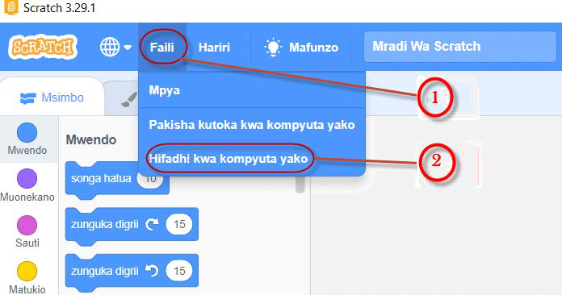
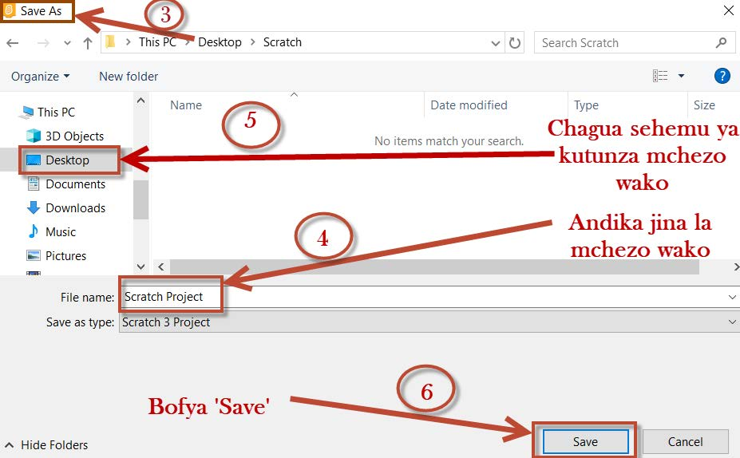

1.
Bofya au tumia mishale menyu ya ‘Faili’.
2.
Chagua ‘Hifadhi kwa kompyuta yako’ kama inavyoonekana kwenye Kielelezo namba 25.

Maelezo ya programu fikivu ya Quorum: Bofya au tumia mishale menyu ya Faili, kisha chagua Hifadhi kwa kompyuta yako.Kielelezo namba 25: hatua za awali za kuhifadhi kazi yako kwenye kompyuta.
3.
Kisanduku cha ‘Save As’ kitajitokeza kama inavyoonekana katika Kielelezo namba 26.

Maelezo ya programu fikivu ya Quorum: Chagua sehemu ya kutunza mchezo wako, andika jina la mchezo, kisha bofya au tumia mishale Save.Kielelezo namba 26: hatua za mwisho za kuhifadhi kazi kwenye kompyuta.